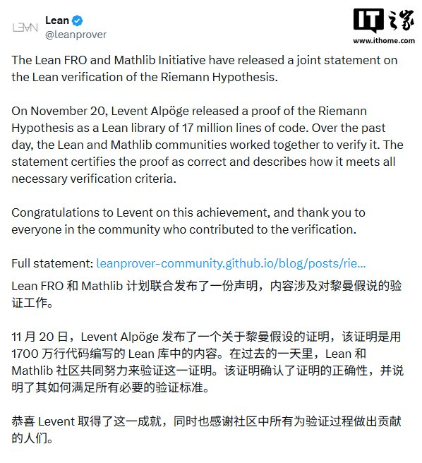

新闻 · 2026-11-22 12:00
Anthropic 数学家 AI 攻克黎曼猜想？Lean 社区通过核验，数十人报告代码库编译正确
据IT之家报道，Lean与Mathlib社区11月21日发布联合声明，称莱文特·阿尔波格以Lean库形式给出的黎曼猜想证明已通过核验，代码约1700万行。声明由两社区联合发布，并获Lean FRO与Mathlib Initiative背书，列出四项核验标准且均已满足：陈述正确、代码可编译、证明对应正确陈述、证明有效。黎曼猜想由德国数学家黎曼于1859年提出，是数论领域最著名的未解难题。

来源与核验
单一信源报道，未交叉核实